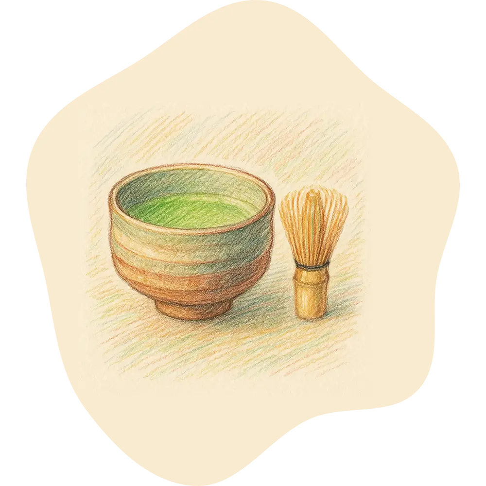

關於和陶居
和陶居是由台灣女婿森田馨與夫人林明美共同創立，夫妻倆出於對日本手工陶藝的熱愛，以及希望能與更多人分享這份美好的心意，成立了這間以推廣日本陶瓷文化為宗旨的專門店。
十年前，森田馨與林明美因緣際會，在京都一年一度的窯元紅葉祭上初次相識。當時，森田馨仍是居住在滋賀縣大津市的上班族，而林明美則是就讀於京都藝術大學的學生。他們在欣賞同一位陶藝作家的作品時，意外地展開了交流。此後，兩人在京都的若宮八幡宮祭、河井寬次郎紀念館，以及各種陶藝作家的個展上多次重逢，漸漸從相知走向交往，最後步入婚姻。婚後，夫妻倆選擇回到台灣生活，並將他們多年來於日常生活中所體驗到的陶瓷之美分享給更多朋友，因此決定開設「和陶居」。
 茶道是森田馨踏入陶藝世界的起點。高中時代加入茶道社的他，因每次茶會隨著季節轉換，使用不同樣式和造型的茶碗，而激發了他對陶藝的濃厚興趣。此後，森田馨利用閒暇時間，走訪鄰近的甲賀市信樂町、京都五條坂，以及岐阜縣、愛知縣等近畿地區知名陶藝產區，更與當地的陶藝作家建立了深厚的情誼。
因此，和陶居成立之初便決定主打森田所熟悉的近畿地區陶藝作品。目前店內主要進口滋賀縣的信樂燒、岐阜縣的美濃燒，以及愛知縣的瀨戶燒與常滑燒。這四個產區各具特色：信樂、瀨戶、常滑為自平安時代起即享有盛名的日本「六古窯」，擁有獨特的製作工藝與釉色表現；而美濃地區則在安土桃山時代發展出豐富多彩的陶藝技法，如今更是全日本陶瓷產量最大、風格多元的陶藝重鎮。
此外，和陶居還特別推出陶藝工坊體驗活動代訂服務，讓對陶藝有興趣的朋友在前往日本旅遊時，也能親自體驗陶藝創作的樂趣。
和陶居深信，陶瓷器皿真正的價值，需要透過日常使用才能充分體驗。因此，和陶居也定期舉辦茶道與料理的體驗活動，鼓勵大家在親自使用器皿的過程中，以更深入的視角體驗陶藝之美，找到與自己心靈產生共鳴的生活器物。